Cada coisa no altar tem uma função.
No México e aqui, no copo d'água pras almas, a água mata a sede de quem fez a longa viagem, e a vela ilumina o caminho.
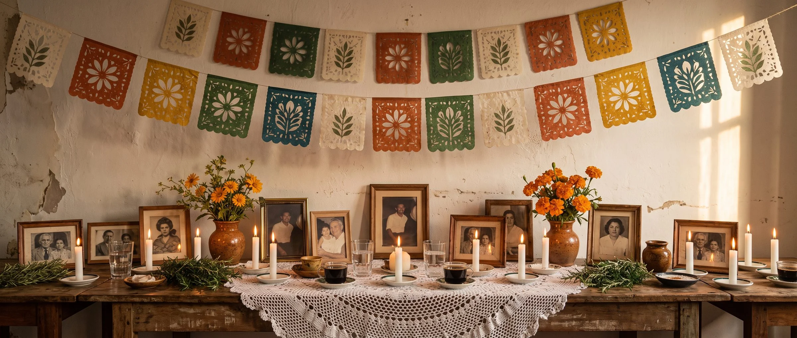
X Encontro das Benzedeiras:
com Edu Parmeggiani
Uma vela branca, um copo d'água e duas tardes pra montar o altar de quem rezou por você.
Fui aprender no Día de Muertos, no México, e trago tudo adaptado pro altar da sua casa.
Sábado, 07/11, das 14h às 17h
Você monta o seu altar e escreve a carta aos seus ancestrais.
Domingo, 08/11, das 14h às 17h
Você lê o que anotou ao acordar, faz o benzimento de linhagem e sela o altar.
Tem uma mulher antes de você. Antes dela veio outra, e antes dessa mais uma, que rezava por gente que ela nem ia conhecer. Você é a ponta viva dessa fila.
Dessa fila você herdou a teimosia que te levanta quando tudo cai, a mão que sabe cuidar, o olho que percebe antes de alguém dizer. E herdou também algum peso, aquele assunto que a família inteira conhece e ninguém comenta: o fardo herdado em silêncio.
Na ancestralidade está a sua cura. E está também tudo aquilo que faz você ser quem é.
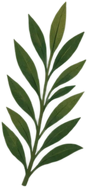
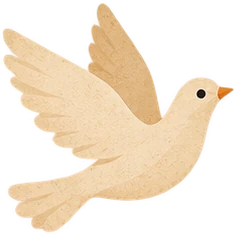
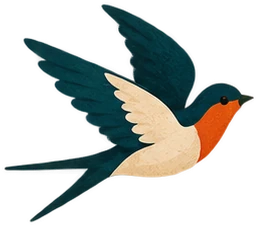
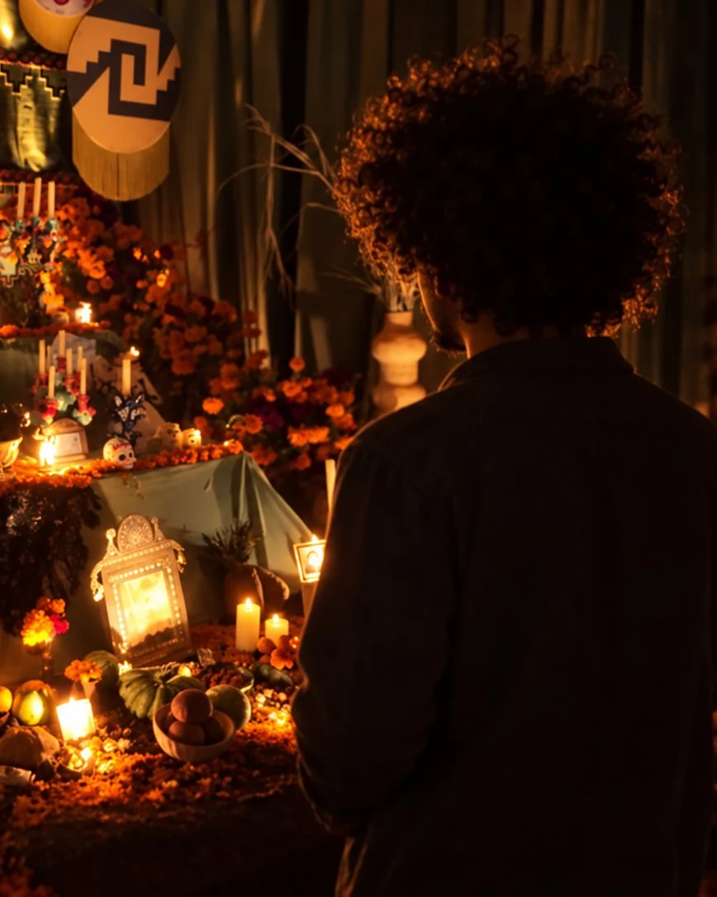
Fui à Cidade do México num intercâmbio com os irmãos mexicanos, pra aprender como eles cultuam os seus numa festa que a UNESCO reconhece como patrimônio cultural imaterial da humanidade. E trago tudo adaptado pro altar brasileiro, com o que tem na sua cozinha e no seu quintal.
No México e aqui, no copo d'água pras almas, a água mata a sede de quem fez a longa viagem, e a vela ilumina o caminho.
As duas vêm do latim colere, que é cuidar: cuidar do que os seus ancestrais sabiam, sem medo e sem culpa.
No México, a foto de quem veio antes vai pro altar. E quem benze faz parte da fila de todas as benzedeiras que rezaram antes dela.
Lá, quem já foi ganha no altar o prato preferido. Aqui, cabe no altar a herança da sua avó: o jeito de passar o café, a reza baixinha.
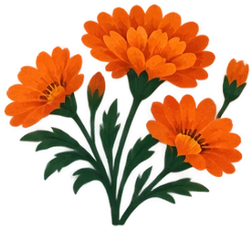
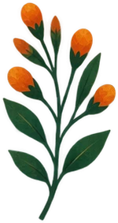
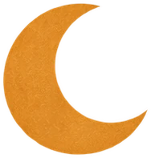
Quem rege esse encontro é Nanã, a avó dos orixás, o barro de onde a gente veio e pra onde a gente volta. Com ela trabalham os pretos velhos e as benzedeiras antigas.
Sábado, 07/11, das 14h às 17h
Você monta o seu altar ancestral comigo, ao vivo, com o que já tem em casa.
Em 20 minutos, você escreve uma carta aos seus ancestrais com uma pergunta e coloca debaixo do copo. Depois, dorme com ela. Acordou, anotou o que veio.
Domingo, 08/11, das 14h às 17h
A gente lê juntas o que você anotou ao acordar e faz o benzimento de linhagem.
Você sela o altar e aprende a cuidar dele em casa. Ele passa a guardar a sua cura e a alegria de ser quem você é.
No domingo à noite, você tem um altar ancestral montado e selado na sua casa, e sabe cuidar dele.
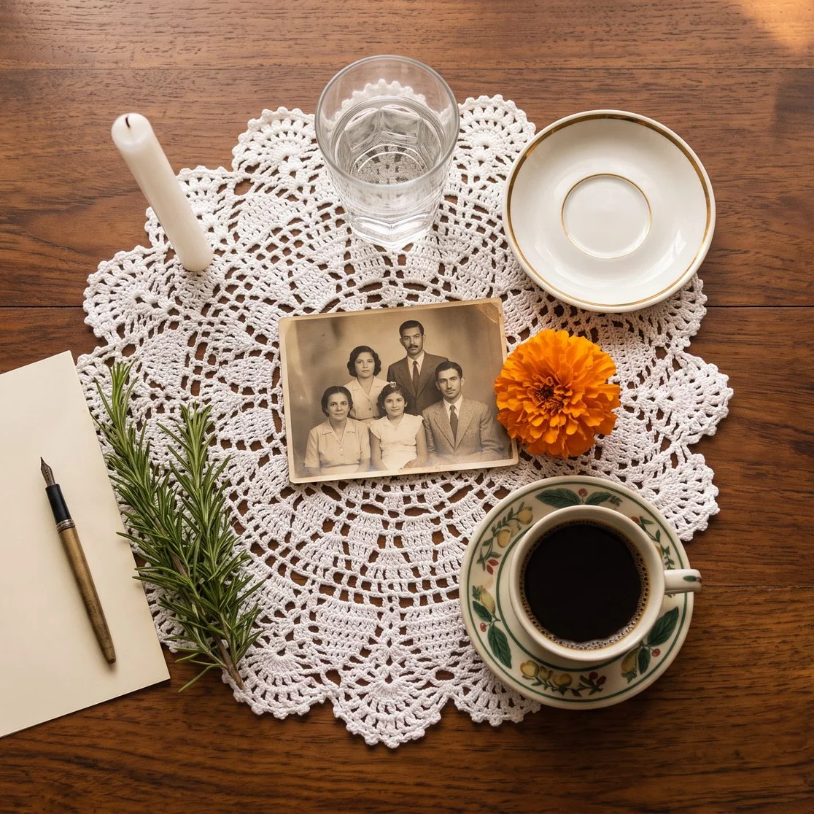
Não precisa de imagem cara nem de loja esotérica.
Na sexta, 06/11, às 14h, chega a apostila do encontro, com a lista de materiais e os protocolos dos dois dias, pra você separar tudo com calma. Ela chega só pra quem tem ingresso.
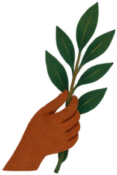
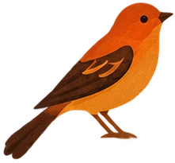
Existe a família do afeto, e existe a linhagem espiritual de quem rezou por você sem saber o seu nome. Quem escolhe para quem acende a vela é você.
Você não precisa chegar pronta. Eu conduzo cada passo ao vivo.
A sua fé é sua. O altar é dos seus ancestrais, e ninguém aqui pede que você mude de religião.
Ninguém chama morto, e ninguém recebe ninguém ao vivo. A gente acende a vela, reza e escuta.
Sacerdote de culto aos ancestrais, cientista da religião em formação, escritor e benzedeiro.
Fundei a Escola Contém Magia, por onde já passaram mais de 44 mil alunos, e escrevi Magia com Plantas, publicado pela Editora Planeta.
Este é o décimo Encontro das Benzedeiras, e as três últimas edições com ingresso somaram 1.471 ingressos.
"Quando te conheci resgatei as minhas raízes. Minha avó, mãe, tia, tios eram benzedeiras e nunca liguei."
"Esse é um trabalho muitíssimo importante que Edu vem fazendo, resgatando os nossos rezos. (...) Hoje temos o orgulho de dizer que somos benzedeira."
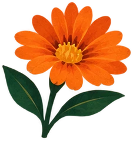
de R$99,90
por R$29,90
Pix ou cartão
As vendas encerram em sábado, 07/11, às 12h
Não existe replay. O encontro é pra ser vivido nas duas tardes. Se você quiser rever depois, inclua a gravação no checkout: R$47, com 1 ano de acesso. Se deixar pra depois, ela custa R$77.
Ao vivo, no Zoom. Depois da compra, você recebe o convite pro grupo das compradoras, e o link da sala chega por lá.
Sim, das 14h às 17h nos dois dias. Se você mora fora do Brasil, confira o fuso.
Não. Quem quiser rever inclui a gravação no checkout, por R$47, com 1 ano de acesso.
Pix ou cartão.
Não. Você tem passagem livre, e o convite chega pelo seu WhatsApp e pelo seu e-mail.
Pode. Você tem permissão pra só assistir e fazer a prática quando se sentir pronta.
Não. O benzimento caminha junto do médico, nunca no lugar dele.
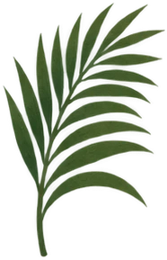
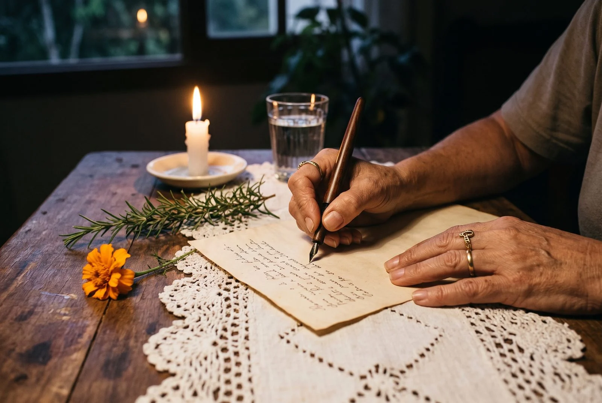
Eu cultuo os meus ancestrais. Foi com esse cuidado que eu fui viver o Día de Muertos no México, e é isso que eu trago pra você nessas duas tardes.
Acender e ouvir.
Uma vela branca. Um copo d'água. E a festa de quem rezou por você muito antes de você saber rezar.
O seu altar espera a primeira vela.
P.S. Sábado 07/11 e domingo 08/11, das 14h às 17h (horário de Brasília). Depois da compra, você recebe o convite pro grupo das compradoras e, na sexta, a apostila com a lista de materiais. As vendas fecham no sábado, às 12h.